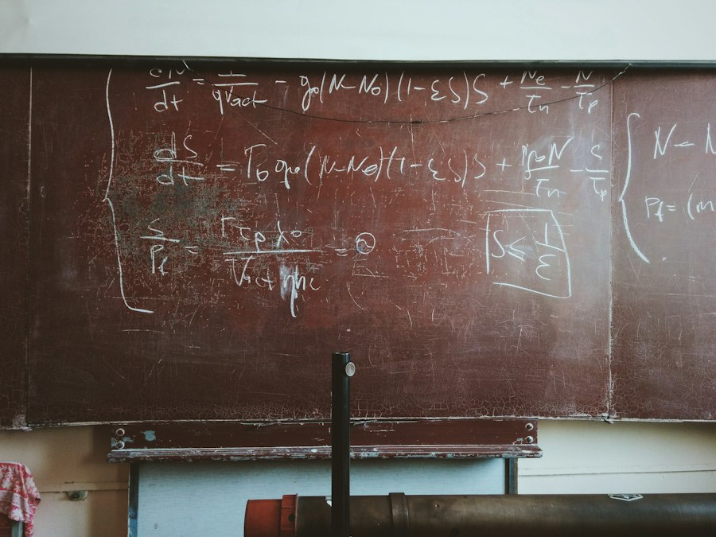

ปัญหาที่ยังเหลือ: ทุกทางต้อง "แตะ → พิมพ์/พูด → ตรวจ → กดบันทึก" ในห้องเรียนที่ครูพูดเร็วมันช้าเกินไป แนวใหม่คือ บันทึกก่อน แก้ทีหลัง · ปุ่มใหญ่อยู่ใต้นิ้วโป้ง · จดได้โดยไม่ต้องเปิดแอปก่อน
1 · หน้าแรก
มิ้นท์,
วันนี้ทำ 3 งานนี้ก่อน
กดค้างแล้วพูด
ไมค์ใหญ่อยู่ใต้นิ้วโป้ง ข้าง ๆ เป็นช่องพิมพ์กับกล้อง รายการงานอยู่ด้านบน ไม่มีปุ่ม 4 กล่องแล้ว
2 · กดค้างไมค์แล้วพูด
กำลังฟัง · ปล่อยนิ้วเพื่อบันทึก
“คณิต ใบงาน 7
ส่งวันพุธ”
ปล่อย = บันทึก · ลากขึ้น = ยกเลิก
เหมือนส่งข้อความเสียงใน LINE พูดไปเห็นไป แอปแยกวิชา งาน และวันส่งให้ทันที
กดค้าง · พูด · ปล่อย = จบ3 · ปล่อยนิ้ว = บันทึกเลย
ไม่มีหน้าตรวจ งานขึ้นบนสุดทันที มีปุ่ม "แก้" กับ "เลิกทำ" ใน 5 วินาที ถ้าแอปไม่รู้วิชาหรือวัน จะมีจุดส้มเตือนให้เติมทีหลัง
4 · รูปจากแชตกลุ่ม

ครู: การบ้านบนกระดานนะ ส่งศุกร์
แชร์รูปจาก LINE มาที่ SABAii ตรง ๆ ได้งานพร้อมรูปแนบ ไม่ต้องเปิดแอปก่อน (Android ที่ติดตั้งแอปไว้)
แชร์ → SABAii = จบ5 · กดค้างไอคอนแอป
เมนูลัดจากหน้าจอโฮม กดค้างไอคอนแล้วเลือกพูดงาน ถ่ายกระดาน หรือฟังครู ได้ทันที (Android)
| อยากจด | ตอนนี้ | แบบ Bolt (รอบก่อน) | แบบใหม่ |
|---|---|---|---|
| พูด | แตะ "พูด" → พูด → ตรวจ → บันทึก | แตะไมค์ → พูด → ตรวจ → บันทึก | กดค้าง → พูด → ปล่อย |
| พิมพ์ | แตะ "พิมพ์" → หน้าต่าง → พิมพ์ → บันทึก | แตะช่อง → พิมพ์ → ↵ | แตะช่อง → พิมพ์ → ↵ (ไม่มีหน้าตรวจ) |
| รูปจาก LINE | เซฟรูป → เปิดแอป → แนบรูป → เลือก → พิมพ์ → บันทึก | เซฟรูป → เปิดแอป → รูปจากแชต → … | แชร์ → SABAii |
| ถ่ายกระดาน | เปิดแอป → ถ่ายรูป → ถ่าย → พิมพ์ → บันทึก | เปิดแอป → ถ่ายกระดาน → … | กดค้างไอคอน → ถ่ายกระดาน → ถ่าย (บันทึกเลย) |